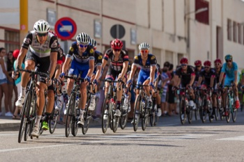

validation only
Cycle the Continental Divide
This annual event sponsored by Mountain Spoke has grown over the past 13 years to become the largest cycling race in the western United States. Beginning at Triple Divide Peak the race covers 5 states, goes through Yellowstone National Park, reaches a peak of 14,278 feet at Grays Peak in Colorado, the race concludes in Las Cruces, New Mexico, covering 1,536 miles. This high-altitude endurance race spans the course of 11 days with an average of 9 hours of riding per day. This is not for the faint of heart and it will expose you to racing conditions you have never seen before.
Details:
- Early registration is now open for the 2019 event
- Register for this race via our website or in person at Mountain Spoke
- Entry Fees must be paid by certified funds:
- Early Registration: $1057.50
- Standard Registration: $1175.00
- Late Registration: $1292.50
- Race begins on the 5th of May 2019
- Four divisions this year Mens A, Mens B, Womens A, and Womens B
- Grand prize is $100,000 for the grand champion and their team
- Over $750,000 in earnings up for grabs
- USA Cycling License required
- Proof of time must be provided from an officially timed race reflecting results on or after April 1, 2017 of a race of minimum distance 250 miles. Bikers will be placed in the last starting corral if the appropriate race distance is not submitted for Proof of Time